Uma análise baseada em dados reais coletados com praticantes de artes marciais de Minas Gerais — Muay Thai, Jiu-Jitsu e Boxe.
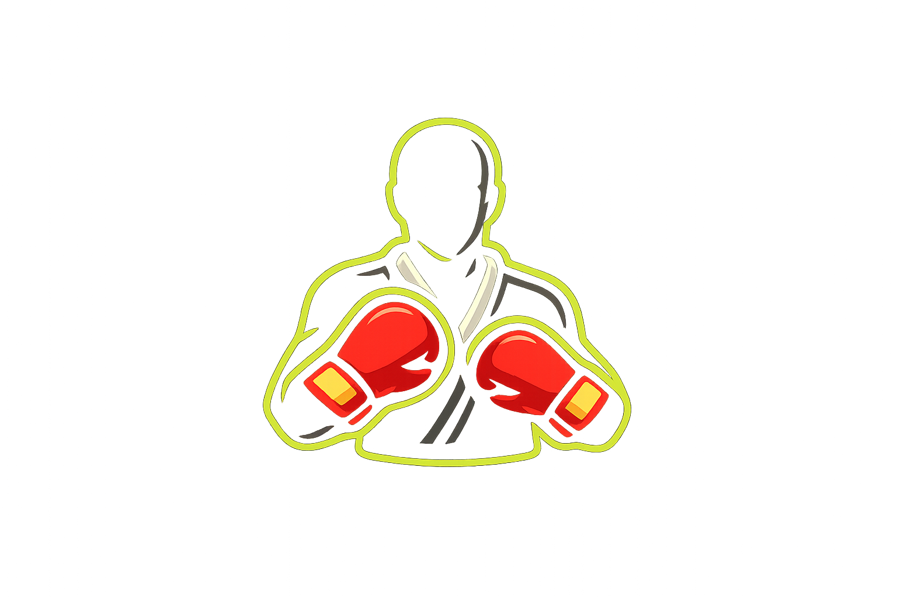
Pesquisa extensionista desenvolvida com praticantes de esportes de combate do estado de Minas Gerais, com o objetivo de identificar padrões de lesão e embasar estratégias de prevenção.
Identificar fatores de risco e comportamentos protetores associados a lesões em praticantes de artes marciais, subsidiando a elaboração de protocolos preventivos.
Estudo observacional transversal com coleta de dados via formulário online (Google Forms), distribuído em grupos de academias e redes de contato do pesquisador.
Praticantes de Muay Thai, Jiu-Jitsu e Boxe responderam voluntariamente ao questionário estruturado com questões sobre perfil, hábitos e histórico de lesões.
Projeto extensionista voltado à comunidade de praticantes de artes marciais, com foco em educação preventiva e produção de conhecimento aplicado à saúde esportiva.
A amostra é composta majoritariamente por jovens adultos do sexo masculino, praticantes de modalidades de combate com frequência de treino variada.
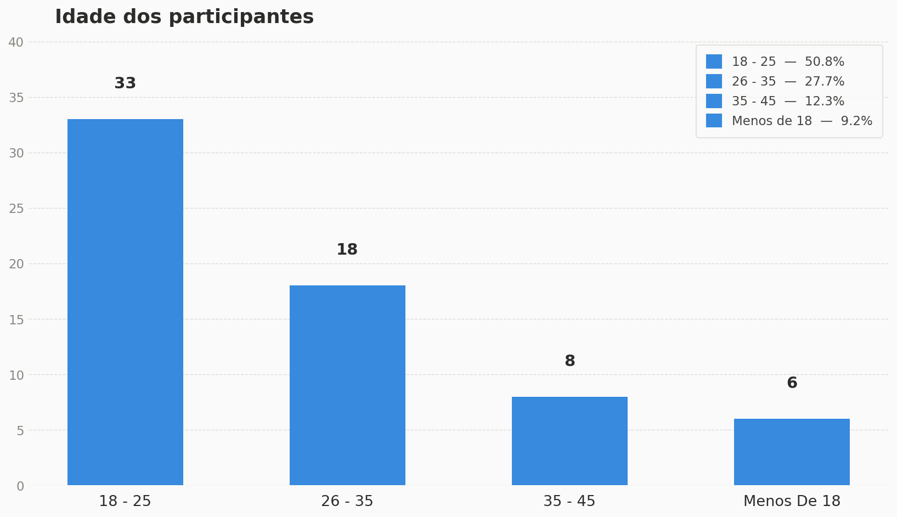
A amostra é composta majoritariamente por jovens adultos: 50,8% têm entre 18 e 25 anos, seguidos por 27,7% entre 26 e 35 anos. Apenas 9,2% têm menos de 18 anos. Esse perfil jovem tem implicação direta para a análise de lesões — atletas jovens tendem a treinar com maior intensidade e subestimar sinais de dor.
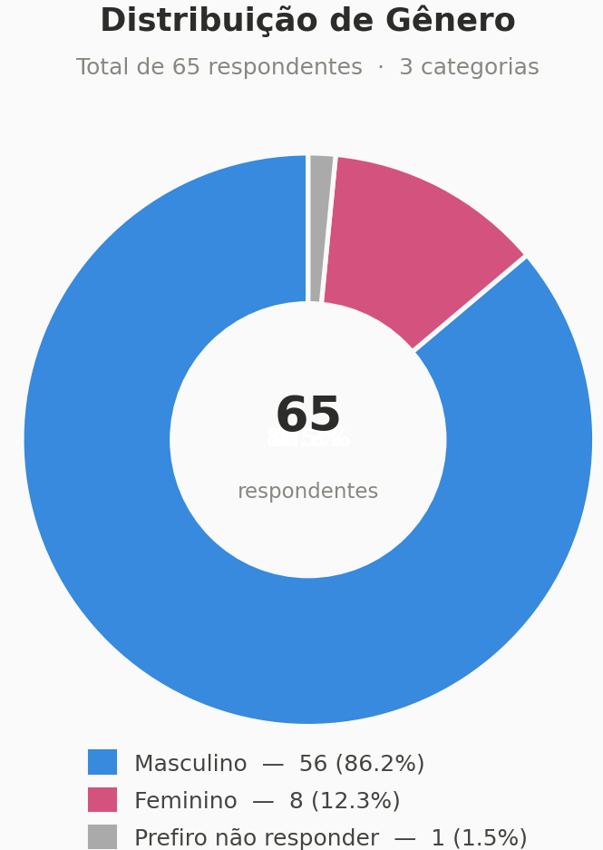
A amostra é predominantemente masculina (86,2%), com apenas 12,3% de mulheres e 1,5% preferindo não responder. Essa distribuição reflete a realidade das academias de artes marciais no Brasil, onde a presença feminina ainda é minoritária.
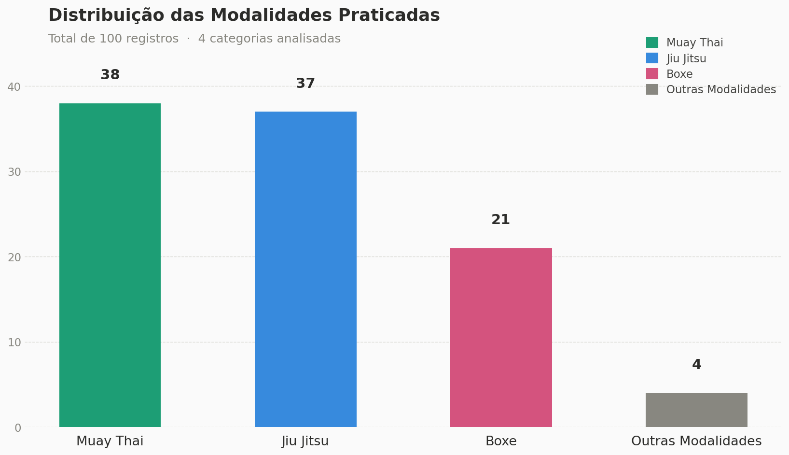
O Muay Thai (38 registros) e o Jiu-Jitsu (37 registros) lideram as modalidades praticadas. Vale notar que 32,3% dos participantes praticam mais de uma modalidade simultaneamente, elevando potencialmente o risco por sobrecarga em múltiplas regiões do corpo.
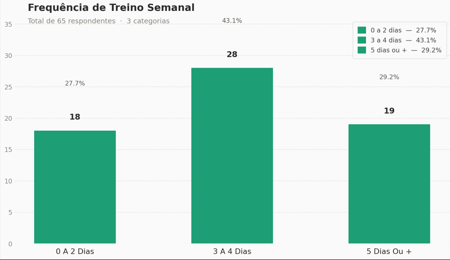
A maioria treina de 3 a 4 dias por semana (43,1%), enquanto 29,2% treinam 5 dias ou mais. Observa-se uma tendência de aumento da taxa de lesão conforme a frequência cresce: 55,6% para quem treina pouco, chegando a 84,2% para quem treina 5 dias ou mais.
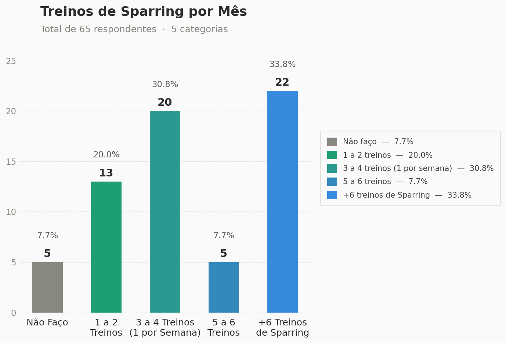
A maioria realiza sparring com frequência elevada: 33,8% fazem mais de 6 treinos por mês e 30,8% fazem de 3 a 4 mensais. Apenas 7,7% não realizam sparring. Essa exposição frequente é um dos maiores fatores de risco biomecânico nos esportes de combate.
Os números são alarmantes e superam estudos internacionais de referência para praticantes recreativos de artes marciais.
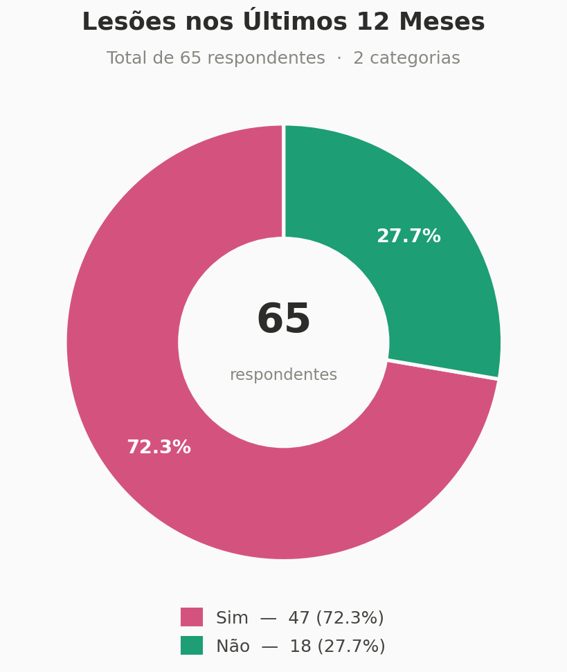
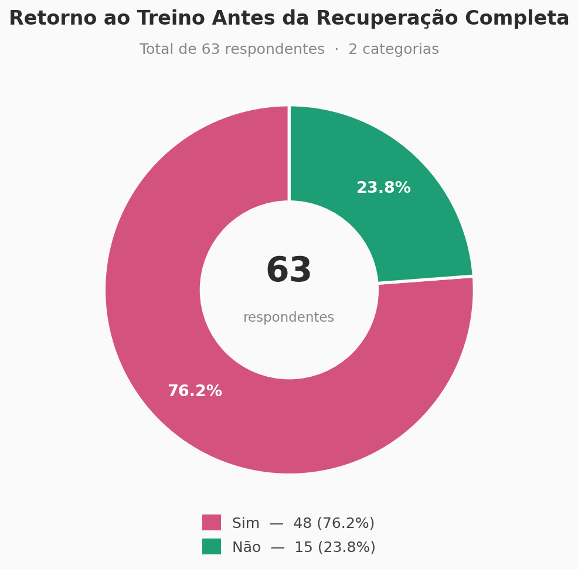
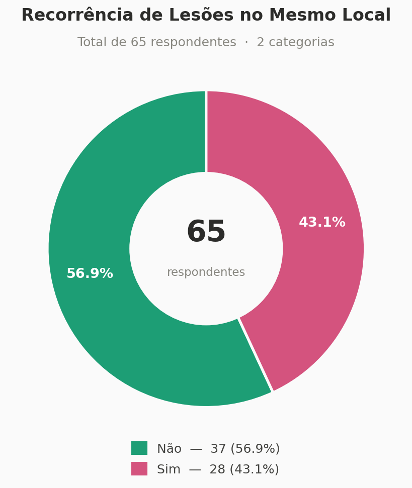
O joelho e o ombro concentram mais de 50% de todas as ocorrências, refletindo as demandas específicas das modalidades de combate analisadas.
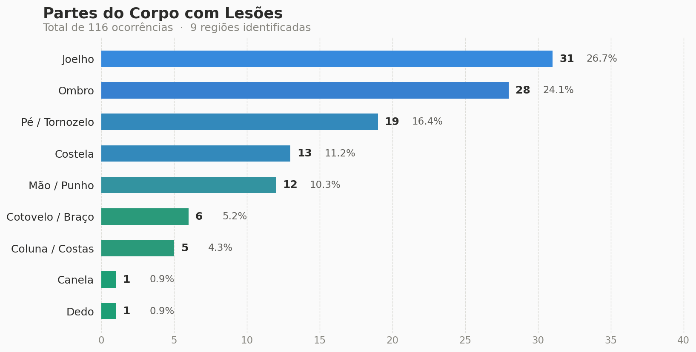
A análise dos hábitos preventivos revela contradições importantes entre o que os praticantes declaram fazer e o impacto efetivo na prevenção de lesões.
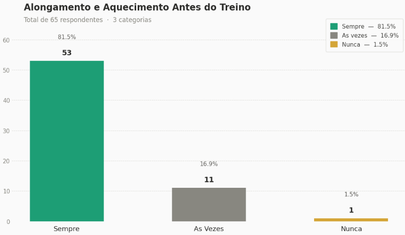
81,5% relatam realizar aquecimento sempre antes dos treinos. Porém, a taxa de lesão permanece em 72,3%, sugerindo que o alongamento isolado, sem fortalecimento e recuperação adequada, tem efeito limitado na prevenção.
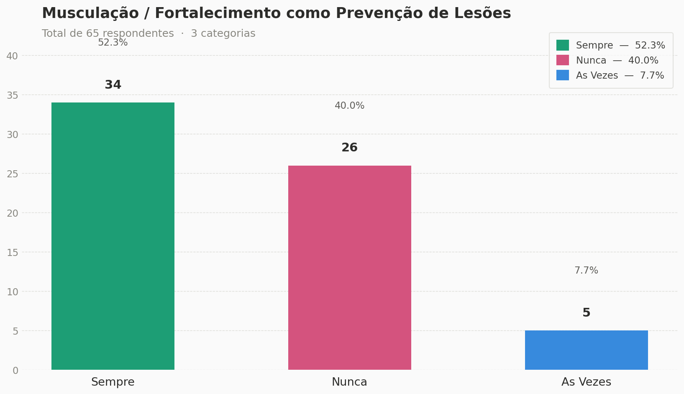
Apesar de 52,3% relatarem praticar musculação regularmente, 40% não realizam nenhum trabalho de fortalecimento. Quem não faz fortalecimento apresenta taxa de lesão de 84,6% contra 64,7% dos que praticam regularmente.
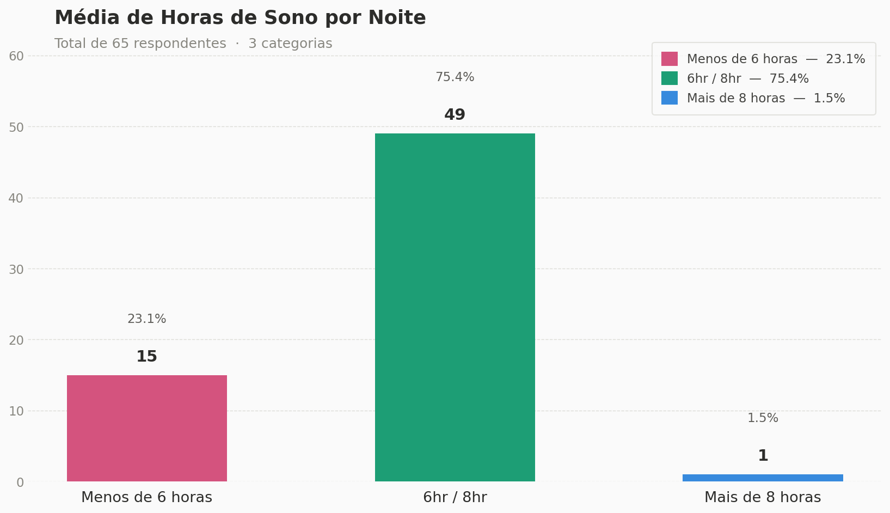
75,4% dormem entre 6 e 8 horas por noite. Porém, 23,1% dormem menos de 6 horas — condição que aumenta a fadiga muscular e reduz a capacidade de regeneração tecidual, criando condições favoráveis para lesões.
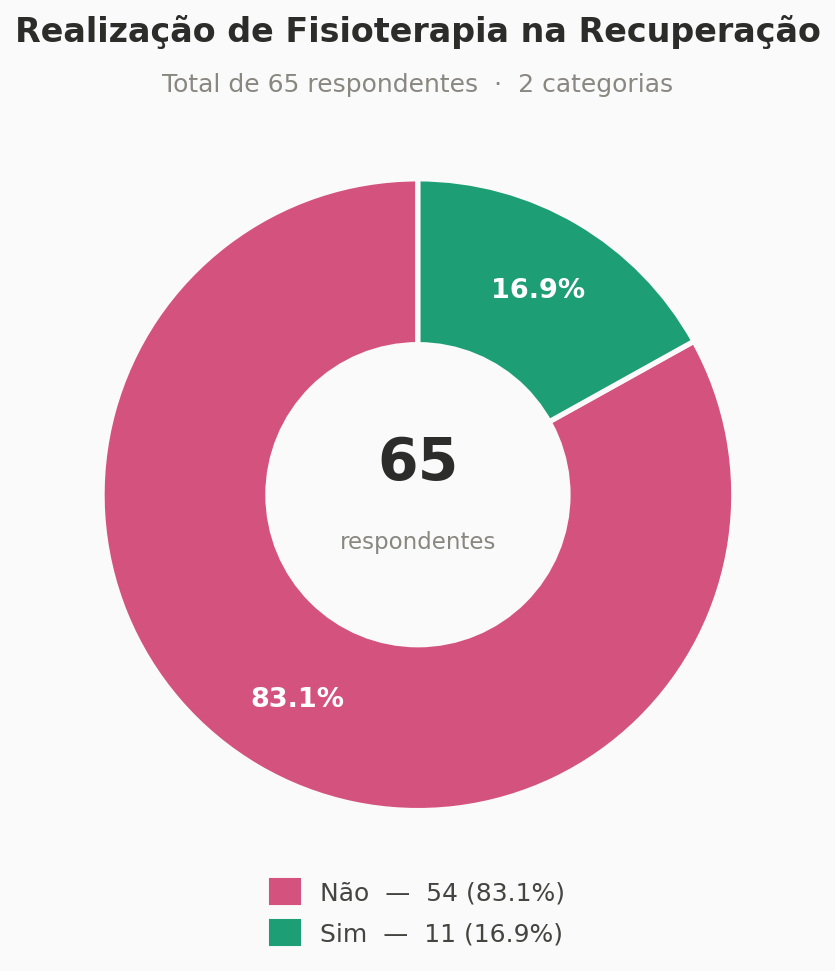
Apenas 16,9% dos participantes realizaram fisioterapia durante a recuperação. A baixa adesão pode estar associada a barreiras de acesso (custo, disponibilidade) ou à cultura de minimização da lesão nos esportes de combate.
Cruzamentos estatísticos entre variáveis comportamentais e incidência de lesão revelam padrões com relevância clínica, mesmo onde o tamanho amostral limitou a significância estatística.
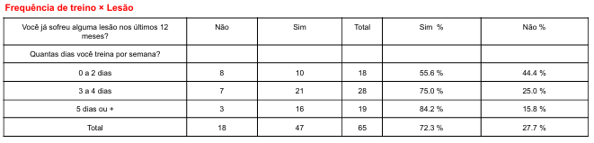
Tendência linear clara: 55,6% de lesão com baixa frequência, subindo para 84,2% com 5+ dias por semana. O teste Qui-Quadrado não confirmou significância estatística, provavelmente pelo tamanho amostral (n=65).
OR 2,96 — quem treina mais tem ~3x mais chance de lesão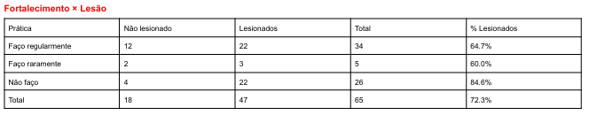
Quem não faz fortalecimento: 84,6% de lesão. Quem faz regularmente: 64,7%. Uma diferença de 19,9 pontos percentuais clinicamente relevante, consistente com a literatura sobre prevenção em artes marciais.
OR 2,27 — mais que o dobro de chance sem fortalecimento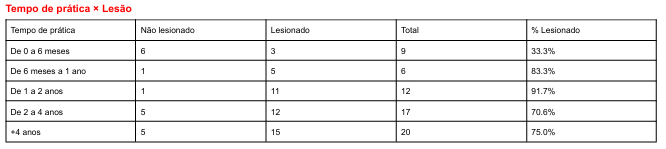
Padrão não linear com pico crítico em praticantes de 1 a 2 anos (91,7%). O resultado limítrofe (p=0,051) sugere associação relevante. O período crítico ocorre quando a confiança supera a capacidade física.
Pico de risco: 1–2 anos de prática (91,7%)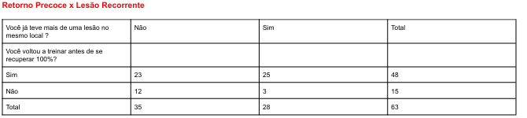
O cruzamento mais robusto da pesquisa: 52% de recorrência entre quem voltou cedo vs. 20% entre quem aguardou recuperação completa. Estatisticamente significativo (p=0,038).
OR 4,35 — 4,3x mais chance de relesão por retorno precoceOs seis achados mais relevantes da pesquisa, traduzidos em conclusões práticas e acionáveis para praticantes, treinadores e academias.
76,2% voltaram ao treino antes de se recuperar completamente. Entre esses, 44,4% sofreram lesão recorrente — 2,4x mais chance do que quem aguardou recuperação total (Fisher p=0,038).
Taxa de lesão de 91,7% em praticantes de 1 a 2 anos — o pico de risco. Nessa fase, a confiança supera a capacidade física adaptada. Resultado limítrofe (χ²=9,44, p=0,051).
Quem treina 5 dias ou mais tem 84,2% de chance de se lesionar, quase o dobro de quem treina até 2 dias. OR=2,96. A periodização do descanso é essencial.
Diferença de 19,9 pontos percentuais entre quem faz e quem não faz fortalecimento. OR=2,27. O fortalecimento periarticular atua tanto na prevenção quanto na aceleração da recuperação.
Joelho (26,7%) e ombro (24,1%) juntos somam mais da metade das ocorrências. Distribuição não aleatória: reflete as demandas de chutes, quedas e imobilizações nas modalidades estudadas.
Apenas 16,9% realizaram fisioterapia na recuperação. O dado paradoxal (81,8% de recorrência entre quem fez fisio) se explica por causalidade reversa: lesões mais graves geram maior busca por tratamento.
Em contraste com o perfil de risco, os dados apontam um conjunto de comportamentos associados a menor incidência e reincidência de lesões.
Cruzando todos os dados analisados, é possível traçar o perfil do praticante com maior risco de se lesionar e desenvolver lesões recorrentes.
A combinação dos fatores abaixo cria condições de sobrecarga crônica e risco elevado de lesão recorrente. Reconhecer esse perfil é o primeiro passo para a prevenção.
As recomendações a seguir emergem diretamente dos achados desta pesquisa, organizadas por público-alvo para maximizar o impacto preventivo.
Acesse o documento completo com todas as análises estatísticas, tabelas de cruzamento, gráficos e recomendações detalhadas desta pesquisa.
Baixar Relatório Completo →Formato PDF · Em breve